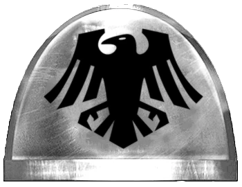

Knights of the Raven
| Knights of the Raven | |
|---|---|
 Heraldry of the Knights of the Raven Artwork © Games Workshop | |
| Founding | Unknown Founding of the late 38th millennium. See List of Space Marine Foundings |
| Progenitor | Raven Guard (Corvus Corax) |
| Homeworld | Coralax, a Feudal world |
| Fortress-monastery | On Coralax |
| Chapter Master | Not recorded |
| Allegiance | Imperium of Mankind |
| Colours | Silver and black |
| Notable battles | |
| Jeghan Insurrection (M41), Redemption Rebellion (744.M41), Achilus Crusade (814.M41), Zeist Campaign (999.M41), War for the Aberrus System (M42), Fourth Tyrannic War (M42) | |
The Knights of the Raven are a Space Marine Chapter of the Adeptus Astartes, one of the few successors of the Raven Guard created since the later years of the 38th millennium. They follow the Codex Astartes closely and are among the least known Chapters in the Imperium. They speak only when needed, use a private battle tongue among themselves, and share little of their affairs even with the Deathwatch and the Inquisition.[1]
The Raven Guard's gene-seed has decayed over the millennia, so fewer Chapters have been raised from it with each Founding. The Chapter Master of the Raven Guard, Kayvaan Shrike, has called the Knights "the Brothers of the Raven Guard" in the Era Indomitus.[1][2]
History
[edit]Coralax
[edit]The Chapter's fortress-monastery stands on the feudal world of Coralax, renamed at the Founding in honour of the primarch. To its people the Knights are legendary beings who come down from the sky once every thirteen Terran years to take the winners of the blood-tourneys held in their honour. The Chapter gathers its aspirants in this way.[1]
Redemption Rebellion
[edit]In 744.M41 the Knights of the Raven and the Aurora Chapter fought together to defeat the Alpha Legion warband behind the Redemption Rebellion. They had hardly declared victory when they swore a feud against each other, each blaming the other for its heavy losses. The Unseen Spears, the Reclusiam command squad of the Knights' 2nd Company, made matters worse. Aurora Marines accused its Chaplain, Givus, of cultivating superstition and fanaticism on Coralax. The Unseen Spears took this as a grave insult and came to blows with the Aurora Chapter. Marneus Calgar, Chapter Master of the Ultramarines, stopped the quarrel with an impassioned speech and proposed as penance that the entire Chapter go to war with Hive Fleet Kraken. The Unseen Spears then led the relief of the death world Vallyx V, and have since led strikes against the Kraken's splinter fleets.[1]
Wars of the 41st millennium
[edit]Early in the 41st millennium the hive world Jeghan rebelled against excessive demands for troops, and the Knights of the Raven crushed the revolt everywhere but Jeghan Hive Secundus, the first and strongest bastion of the rebels. They broke the siege there with a combined-fire tactic called the Hellstorm: the Flamestorm cannons of a squadron of Land Raider Redeemers firing as one at a single point. The tactic was quickly adopted across the Chapter, and the hive fell within weeks.[1] In 814.M41 a small task force of the Chapter emerged unannounced from the Jericho-Maw Warp Gate and joined the Achilus Crusade. The Chapter treats the duty as a point of honour, and a few battle-brothers have also joined the Deathwatch at Watch Fortress Erioch.
Era Indomitus
[edit]In early 999.M41 the Chapter sent three companies against the T'au Empire in the Zeist Campaign, led by Captain Cato Sicarius of the Ultramarines. In M42 its Vanguard Strike Force Tristyan and Armoured Task Force Corarikus fought in the Aberrus System with the Lamenters, the Iron Lords and the Scythes of the Emperor against a tendril of Hive Fleet Kraken; the same period saw guerrilla war across the Segmentum Pacificus in the Fourth Tyrannic War.[2] Captain Mordren was chosen by Shrike as one of the first members of the reborn Mor Deythan, the Raven Guard's elite infantry of the Great Crusade. The only non-Raven Guard Marine to serve in it, he drew the open anger of Shadow Captain Aevar Qeld, until Shrike put an end to the matter.[1]
Organisation
[edit]The Knights keep the standard structure of the Codex. Company is shown by the colour of the left knee plate. The Chapter's ancient armour, its Land Raider squadrons and its skill in the Hellstorm tactic mark its way of war.[1]
Notable members
[edit]- Mordren, Captain, a founder of the reborn Mor Deythan.
- Givus, Chaplain of the Unseen Spears, the 2nd Company Reclusiam command squad.
Timeline
[edit]| Date | Event |
|---|---|
| 005.M31 | Raven Guard Legion shattered at Isstvan V |
| c. 021.M31 | Second Founding: the Raven Guard are divided into Chapters |
| c. late M38 | Knights of the Raven raised; Coralax renamed |
| M41 (early, undated) | Jeghan Insurrection; Hellstorm tactic first used |
| 744.M41 | Redemption Rebellion; feud with the Aurora Chapter |
| 814.M41 | Task force joins the Achilus Crusade |
| early 999.M41 | Zeist Campaign against the T'au Empire |
| M42 (undated) | Mordren joins the reborn Mor Deythan |
| M42 (undated) | War for the Aberrus System; Fourth Tyrannic War |